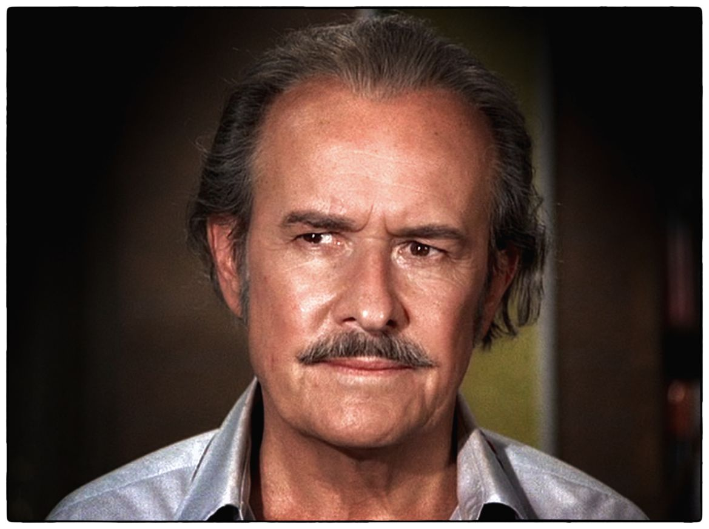

George Voskovec (1905–1981)
Founded Czech avantgarde theatre and film group 'Osvobozene divadlo' with actor Jan Werich in 1927. Affiliated with the Poetist movement (Karel Teige). Made succesfull comedy shows with political themes. Voskovec left Czechoslovakia after the German invasion, 1938/39 and emigrated to the US. See full bio »
Born: June 19, 1905 in Sázava, Bohemia, Austria-Hungary [now Czech Republic]
Died: July 1, 1981 (age 76) in Pearblossom, California, USA
Filmography
-
Barbarosa 1982
Herman Pahmeyer -
Somewhere in Time 1980
Dr. Gerald Finney -
Happy Days (TV Movie) 1980
Willie -
The Nativity (TV Movie) 1978
Joachim -
Nicky's World (TV Movie) 1974
Paul Kaminios -
Man on a Swing 1974
class="card" style="width: 20rem;" Dr. Nicholas Holnar -
The Iceman Cometh 1973
Piet Wetjoen -
The Boston Strangler 1968
Peter Hurkos -
The Unvanquished (TV Movie) 1967
Eleazar -
The Desperate Ones 1967
Doctor -
An Enemy of the People (TV Movie) 1966
Morten Kiil -
Mister Buddwing 1966
Shabby Old Man -
Lamp at Midnight (TV Movie) 1966
Cardinal Bellarmin -
The Spy Who Came in from the Cold 1965
East German Defense Attorney -
I Hamlet 1964
Player King -
Arsenic & Old Lace (TV Movie) 1962
Dr. Herman Einstein -
The Emperor's Clothes (TV Movie) 1960
Elek Odry -
BUtterfield 8 1960
Dr. Tredman -
Wind Across the Everglades 1958
Aaron Nathanson -
The Bravados 1958
Gus Steinmetz -
Uncle Vanya 1957
Voinitsky (Uncle Vanya) -
The 27th Day 1957
Prof. Klaus Bechner -
12 Angry Men 1957
Juror 11 -
The Iron Mistress 1952
John James Audubon -
Affair in Trinidad 1952
Doctor Franz Huebling -
Anything Can Happen 1952
Pavli -
Svet patrí nám 1937
Camlet (as Jirí Voskovec) -
Hej-rup! 1934
Filip Kornet, shuffer (as Jiri Voskovec) -
Penize nebo zivot 1932
Pepík (aka Jirí Voskovec) -
Pudr a benzin 1932
Driver -
Paní Katynka z Vajecného trhu 1929
Iskariot (as Petr Dolan) -
Ve spárech upíra 1927
(as Petr Dolan) -
Pohádka máje 1926
Ríša (as Petr Dolan)